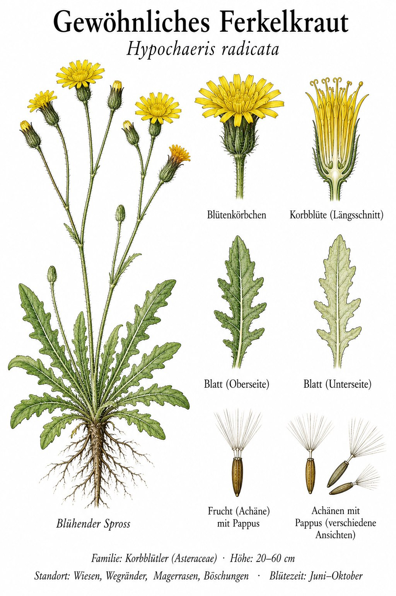

Der Doppelgänger
Auf den ersten Blick: Löwenzahn. Auf den zweiten Blick: Hmmm, die Blätter sind anders — viel rauer, eckiger, dichter. Was hier wächst, ist das Ferkelkraut, ein „Falscher Löwenzahn“. Genaues Hinsehen lohnt: Die Blätter sind grob behaart (Löwenzahn ist glatt), und der Blütenstängel ist verzweigt mit mehreren Blütenkörbchen (Löwenzahn hat nur einen). Plus: kein Milchsaft beim Schneiden — Ferkelkraut hat klares Sekret.
Warum „Ferkel“?
Der deutsche Name kommt aus alten Bauerntraditionen: Ferkel und andere Tiere fressen die Wurzeln gerne — sie sind nahrhaft und stärkereich. In manchen Regionen wurden die Wurzeln im Frühjahr ausgegraben und an Schweine verfüttert. Heute eher eine Wiesenpflanze, die von Wiesentieren gefressen wird, aber den Namen aus alten Zeiten behalten hat.